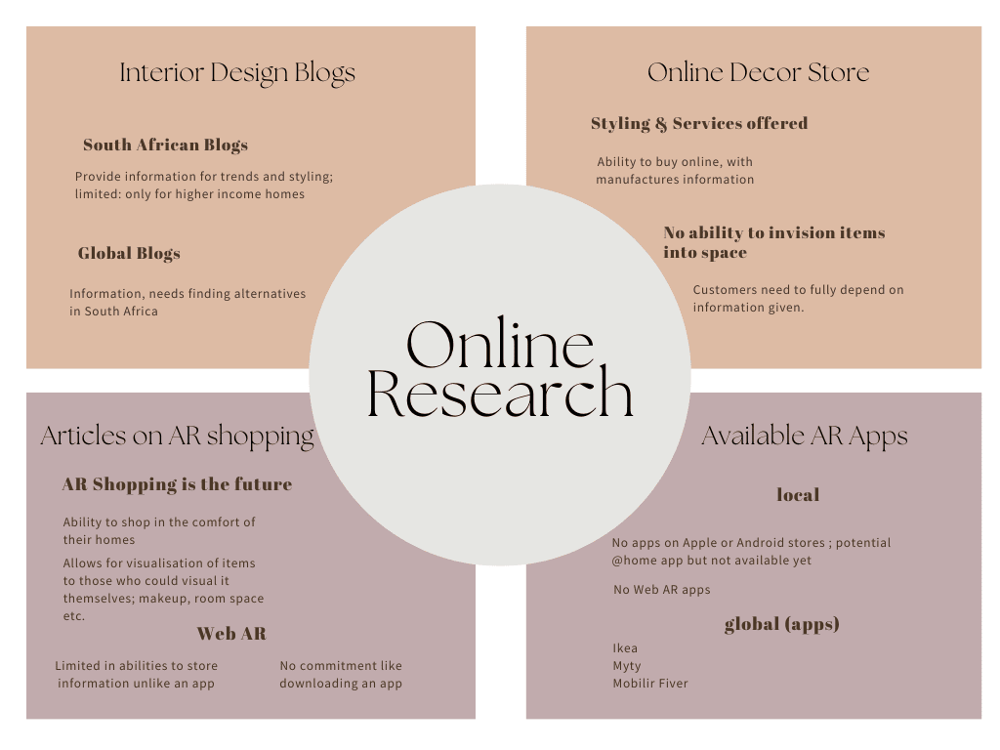
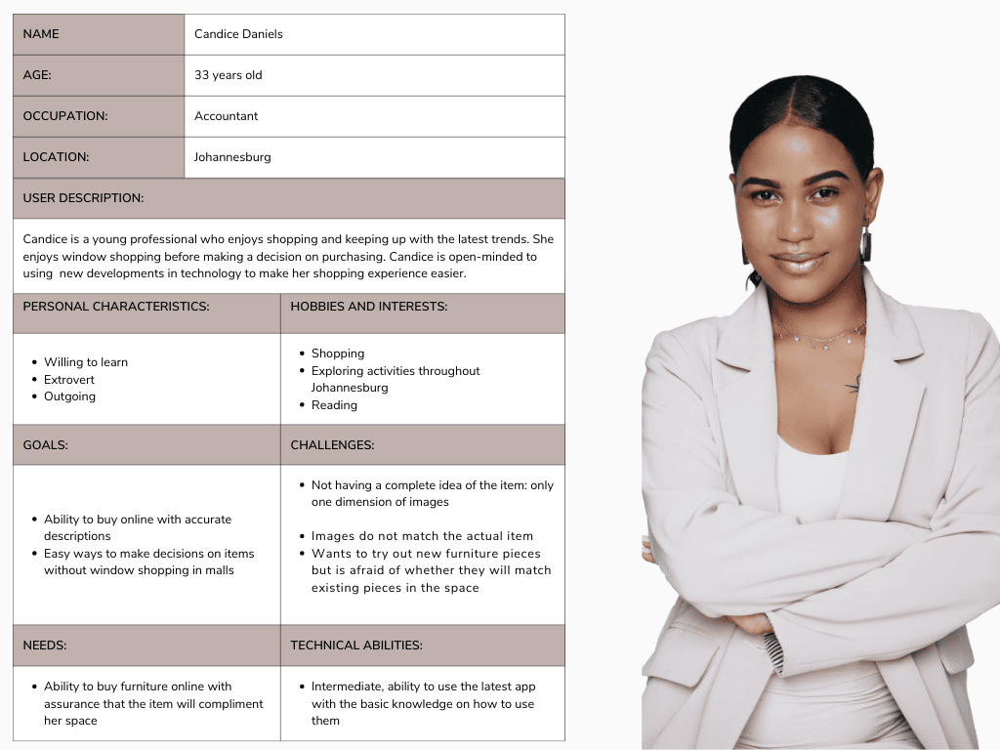
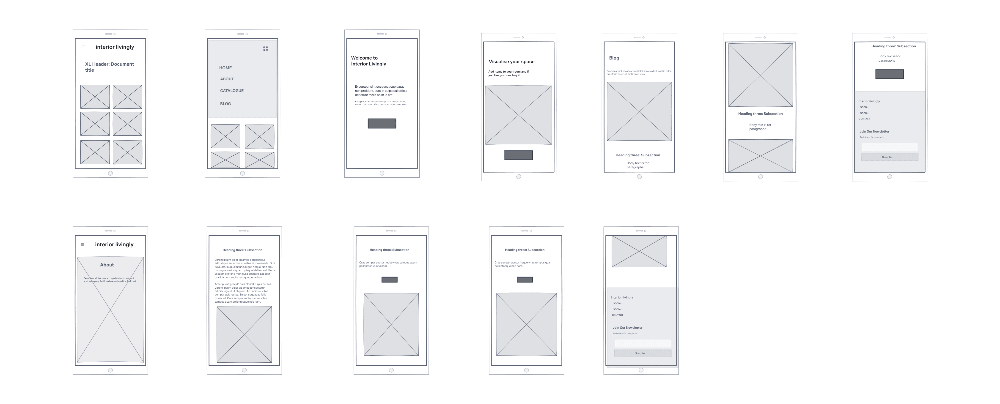

Interior Livingly is a blog that provides readers with short, easy to read blog posts that encompasses the latest trends that can be used within their individual spaces. The blog started on instagram with quick and easy to follow posts but wants to differentiate itself from other interior design blogs providing a little more to help readers create their own space. The blog wants to provide an AR experience to their readers. A website would be built that has blog posts and the ability for users to open up an AR function to place items from our catalogue into their spaces.
The objective is to explore the thought process of the readers when opting to redo a space and how they envision adding furnishings and furnishing to their space.
Timeline 3 days
Examining blogs online: seeing what are other blogs doing
Key questions to ask:
Timeline 2 weeks
Conduct interviews and polls online with readers and potential readers
Key questions to ask:
AR is the future of customer shopping experience.Allowing customers to 'try before you buy' without actually walking into a store.
Web AR is a simplified version of AR with its pro's and con's but allows for a broader range of users through web searches.
There are not as many African/ South African based interior designer or furniture stores that provide AR experience to customers.
Once all the data was collected I then came to my conclusions was by splitting the data so that it could be easily measured by:
Quantitative results are from close ended questions; yes and no or given participants options to choose from.
Qualitative results are from the patterns of responses from participants substantiating their responses. I could then group keywords and deduce themes from the findings.
Overall readers and potential readers of the blog came to a few conclusions:
I created a user persona that matches the average, current reader of the blog.
I first decided on what type of application to choose from which was: a website with a Web AR feature. The website would have:
I decided to make it easy to use as most users either: do not use AR or have a low level knowledge of AR.
Easy navigation for users, without too many features to complicate the user's experience.
Photographs of furniture items would be converted from images to 3d models through the use of blender.
The low fidelity desktop wireframe begins on the landing page of the site and branches off into other pages. Users will be able to access most of the site with the exception of the web AR feature.
To access the web AR feature, the user would need to use a mobile/tablet.
The next step is to pitch the idea to furniture stores and manufacturers to be able to advertise their products on the site.
The project was a great learning curve for me as it tested my research ability into a new customer market to explore. The concept has the potential to allow South African shoppers to explore a new way of purchasing furniture. Learning about Web AR and AR apps is a remarkable avenue and I intend on learning more about the potential use of it in everyday life.